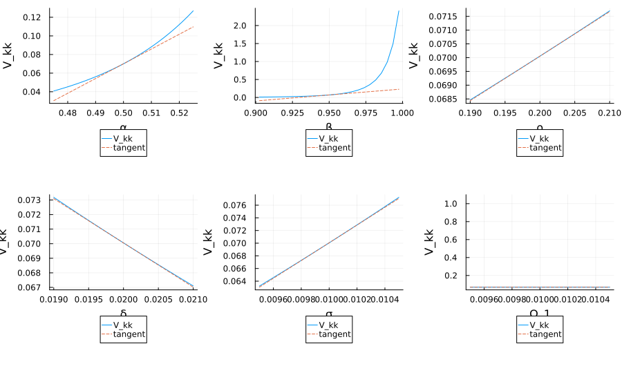

Discrete Lyapunov (Schur)
lyapd(A, C) solves the discrete Lyapunov equation
\[A X A^\top - X + C = 0\]
using the Schur-based Bartels–Stewart algorithm from MatrixEquations.jl: the upstream solver Schur-factorises A once and runs a triangular sweep (MatrixEquations.lyapds!) on the transformed right-hand side. For non-toy state dimensions this is the right default — $O(n^3)$ per solve, vs. $O(n^6)$ for the Kronecker-vec form. MatrixEquationsAD wraps that solver in a cache-aware shadow so a single schur(A) is reused across all tangent / cotangent directions.
This is the same equation that determines the stationary covariance $\Sigma_\infty$ of the QuantEcon Linear State Space Model $x_{t+1} = A\,x_t + w_{t+1}$ with $w_t \sim \mathcal{N}(0, Q)$: $\Sigma_\infty = A\,\Sigma_\infty A^\top + Q$, i.e. our equation with $X = \Sigma_\infty$ and $C = Q$.
MatrixEquationsAD also exports lyapd!(X, A, C), which writes the solution into a caller-supplied X and returns nothing. The in-place form shares the same Schur cache plumbing and carries the full set of AD rules — ForwardDiff Dual dispatch, Enzyme forward (Duplicated / BatchDuplicated), and Enzyme reverse (augmented_primal + reverse). The reverse rule stashes the Schur factors on the tape so the adjoint pass never re-Schurs A. A cache-taking overload lyapd!(X, cache::LyapDSchurCache, C) lets the AD rules share one schur(A) across all forward tangent directions or reverse cotangents.
Implementation pointers:
src/lyapd.jl—LyapDSchurCache,lyapdfactor,lyapdsolve,lyapdadjointsolve, the cache-awarelyapd(A, C)shadow, and the in-placelyapd!Float methods (the primal kernels both extensions share).ext/enzyme_lyapunov.jl— Enzyme forward / reverse rules forlyapdandlyapd!.ext/forwarddiff_lyapunov.jl— ForwardDiffDualdispatches on the same surface, reusing the primal cache primitives.MatrixEquations.lyapds!— upstream in-place kernel operating on $A$ in real or complex Schur form (adj = false / truefor transpose variants).
Primal
Define the linear operator
\[L_A[X] \;=\; X \;-\; A\,X\,A^\top.\]
The primal equation is $L_A[X] = C$. The cache-aware shadow precomputes $\mathrm{schur}(A) = (T, Z)$ with $A = Z\,T\,Z^\top$, stores it in a LyapDSchurCache, then transforms the right-hand side, runs the upstream Schur-form kernel, and untransforms:
\[\tilde C \;=\; Z^\top\,C\,Z, \qquad T\,\tilde X\,T^\top \;-\; \tilde X \;+\; \tilde C \;=\; 0, \qquad X \;=\; Z\,\tilde X\,Z^\top.\]
For $\texttt{C::Symmetric}$ this is one call to lyapds!(cache.T, rhs); for general dense $C$ the dispatch routes to sylvds!(-cache.T, cache.T, rhs; adjB = true), which solves the same triangular system without enforcing symmetry.
Existence and uniqueness require no two eigenvalues of $A$ multiply to one. $\rho(A) < 1$ is sufficient and is the case of interest for stationary-covariance applications below.
Worked example
A 2×2 sanity case:
julia> using MatrixEquations: lyapd
julia> using MatrixEquationsAD
julia> A = [0.55 0.08; -0.04 0.42]
2×2 Matrix{Float64}:
0.55 0.08
-0.04 0.42
julia> C = [1.0 0.2; 0.2 0.7]
2×2 Matrix{Float64}:
1.0 0.2
0.2 0.7
julia> X = lyapd(A, C)
2×2 Matrix{Float64}:
1.47343 0.253679
0.253679 0.84244
julia> isapprox(A * X * A' - X + C, zeros(2, 2); atol = 1.0e-12)
truelyapd! writes the same X into a caller-supplied buffer:
julia> Xip = zeros(2, 2);
julia> lyapd!(Xip, A, C);
julia> Xip == X
trueHot-loop pattern: share one schur(A) across calls
For estimation / optimisation loops that solve the same equation against varying right-hand sides, the cache-taking overload lyapd!(X, cache::LyapDSchurCache, C) lets the caller build the Schur factorisation once and reuse it:
julia> using MatrixEquationsAD: lyapdfactor
julia> cache = lyapdfactor(A);
julia> X1 = similar(A); lyapd!(X1, cache, C);
julia> C2 = [1.5 0.1; 0.1 0.9];
julia> X2 = similar(A); lyapd!(X2, cache, C2); # no second schur(A)
julia> X1 ≈ lyapd(A, C) && X2 ≈ lyapd(A, C2)
trueThe AD rules use this same plumbing under the hood — one schur(A) serves the primal and every tangent / cotangent direction.
ForwardDiff JVP
Step 1: differentiate the implicit equation. For one tangent direction $(d A, d C)$, applying $L_A$ to $d X$ gives another discrete Lyapunov equation against the same $A$:
\[L_A[d X] \;=\; d C \;+\; d A\,X\,A^\top \;+\; A\,X\,d A^\top.\]
Step 2: cached factorisation. The single schur(A) cache built on the value layer is shared across every tangent direction.
Step 3: solve per direction. One lyapds! triangular sweep against the cached Schur factors per partial.
Step 4: code path. The ForwardDiff dispatch builds the cache once and calls lyapdsolve(cache, rhs_i) for each partial direction in the chunk — $N$ triangular sweeps for a chunk of width $N$. The Enzyme BatchDuplicated forward rule is structurally identical: one schur(A) per outer call, then one triangular solve per tangent.
Enzyme VJP
The upstream Schur solver does not enforce symmetry on $X$ (lyapds! returns a symmetric result only when $C$ is Symmetric), so the formulas below apply to the general dense map. The Symmetric-C dispatch uses the same adjoint solve, then projects the accumulated parameter cotangent $\bar C$ onto the symmetric manifold before adding it to the shadow buffer.
Step 1: differentiate the implicit equation (adjoint). Let $\bar X$ be the cotangent on the output. Define $Y$ by the adjoint Lyapunov solve
\[L_A^*[Y] \;=\; Y \;-\; A^\top\,Y\,A \;=\; \bar X.\]
Step 2: cached factorisation. Same schur(A) as the JVP, copied to Enzyme's tape by the augmented primal so the reverse pass never re-Schurs. Multiple reverse cotangents reuse it.
Step 3: parameter cotangents.
\[\bar C \;\mathrel{+}=\; Y, \qquad \bar A \;\mathrel{+}=\; Y\,A\,X^\top \;+\; Y^\top\,A\,X.\]
Step 4: code path. lyapdadjointsolve(cache, X̄) routes to lyapds!(cache.T, rhs; adj = true) for Symmetric cotangents and to the transposed sylvds! variant otherwise; the reverse pass then performs the two outer products.
References:
- MatrixEquations.jl documents
lyapdas solving $A X A^\top - X + C = 0$ in its Lyapunov solver documentation. - Kao and Hennequin derive forward and reverse rules for Lyapunov, Sylvester, and Riccati equations in arXiv:2011.11430.
- QuantEcon Julia, Linear State Space Models — same equation determines the stationary covariance $\Sigma_\infty = A\,\Sigma_\infty\,A^\top + Q$ of $x_{t+1} = A\,x_t + w_{t+1}$.
Example: RBC stationary covariance, end-to-end
After the Klein/Sims policy is in hand, the predetermined state evolves as $x_{t+1} = h_x\, x_t + B_{\text{shock}}\,\varepsilon_{t+1}$ with innovation covariance $Q = B_{\text{shock}}\,B_{\text{shock}}^\top$. Following the QuantEcon Linear State Space convention with $A = h_x$, the stationary covariance $V$ of $x_t$ satisfies $V = A\,V\,A^\top + Q$, i.e. our equation with $C = Q$.
Using the RBC policy values from the Klein Policy Map quick start:
julia> using LinearAlgebra: Symmetric
julia> using MatrixEquations: lyapd
julia> using MatrixEquationsAD
julia> h_x = [
0.9568351489231556 6.209371005755667;
-3.3737787177631822e-18 0.20000000000000004
]
2×2 Matrix{Float64}:
0.956835 6.20937
-3.37378e-18 0.2
julia> B_shock = reshape([0.0, -0.01], 2, 1)
2×1 Matrix{Float64}:
0.0
-0.01
julia> Q = Symmetric(B_shock * transpose(B_shock))
2×2 Symmetric{Float64, Matrix{Float64}}:
0.0 0.0
0.0 0.0001
julia> V = lyapd(h_x, Q)
2×2 Matrix{Float64}:
0.0700541 0.000159976
0.000159976 0.000104167
julia> V[2, 2] ≈ 0.01^2 / (1 - 0.2^2) # matches AR(1) closed form
trueThe TFP stationary standard deviation is $\sigma/\sqrt{1-\rho^2}$, ~1%; the implied capital standard deviation $\sqrt{V_{11}}$ is ~26%, matching the cumulative-shock interpretation of $h_x[1,2]$.
Wrapping Q as Symmetric routes the AD rules onto the lyapds!-based path; passing a plain Matrix would dispatch onto the sylvds!-based path with the same result. Either way lyapd is the right call here — $O(n^3)$ in the state dimension, with one cached schur(A) reused across AD directions.
Differentiating through lyapd
ForwardDiff against a scalar loss:
using ForwardDiff
using MatrixEquations: lyapd
using MatrixEquationsAD
A = [0.55 0.08; -0.04 0.42]
C = [1.0 0.2; 0.2 0.7]
loss(A, C) = sum(lyapd(A, C))
∇A = ForwardDiff.gradient(A -> loss(A, C), A)Enzyme reverse on the same loss:
using Enzyme: Active, Const, Duplicated, Reverse, autodiff, make_zero
using LinearAlgebra: dot
using MatrixEquations: lyapd
using MatrixEquationsAD
A = [0.55 0.08; -0.04 0.42]
C = [1.0 0.2; 0.2 0.7]
W = [0.4 -0.1; -0.1 0.7]
weighted(A, C, W) = dot(W, lyapd(A, C))
A_bar = make_zero(A); C_bar = make_zero(C)
autodiff(
Reverse, weighted, Active,
Duplicated(A, A_bar), Duplicated(C, C_bar), Const(W),
)
# A_bar, C_bar now hold the gradients.Example: differentiating stationary variance through the pipeline
Composing parameter assembly → klein_map → lyapd gives a scalar function $\tilde V_{kk}(p)$ returning the stationary variance of capital under the linearised RBC model. Every supported AD backend differentiates it end-to-end. The function below uses the same rbc_first_order_assembly(p) as the Klein Policy Map quick start (reproduced for self-containment), pipes its output through klein_map, then solves $V = h_x V h_x^\top + Q$ with $B_{\text{shock}} = [0;\, \sigma]$ and $Q = B_{\text{shock}}\,B_{\text{shock}}^\top$:
using ForwardDiff
using MatrixEquations: lyapd
using MatrixEquationsAD
function rbc_first_order_assembly(p)
α, β, ρ, δ, _σ, _Ω_1 = p
rk = (1 / β - 1 + δ) / α
k_ss = rk^(1 / (α - 1))
y_ss = k_ss^α
c_ss = y_ss - δ * k_ss
mpk = α * k_ss^(α - 1)
k_col, z_col, c_col, y_col, i_col = 1, 2, 3, 4, 5
T = promote_type(typeof(α), typeof(β), typeof(δ), typeof(k_ss))
A = zeros(T, 5, 5); B = zeros(T, 5, 5)
A[1, k_col] = -β * (α - 1) * mpk / k_ss / c_ss
A[1, z_col] = -β * mpk / c_ss
A[1, c_col] = inv(c_ss^2)
B[1, c_col] = -inv(c_ss^2)
A[2, k_col] = one(T); B[2, k_col] = -(one(T) - δ)
B[2, c_col] = one(T); B[2, y_col] = -one(T)
B[3, k_col] = -mpk; B[3, z_col] = -y_ss; B[3, y_col] = one(T)
A[4, z_col] = one(T); B[4, z_col] = -ρ
A[5, k_col] = -one(T); B[5, k_col] = one(T) - δ; B[5, i_col] = one(T)
return A, B, 2
end
function stationary_capital_variance(p)
A, B, _ = rbc_first_order_assembly(p)
r = klein_map(A, B; threshold = 1.0e-6)
σ = p[5]
Q = [0.0 0.0; 0.0 σ^2]
V = lyapd(r.h_x, Q)
return V[1, 1]
end
p₀ = [0.5, 0.95, 0.2, 0.02, 0.01, 0.01]
V_kk = stationary_capital_variance(p₀)
∇V_kk = ForwardDiff.gradient(stationary_capital_variance, p₀)6-element Vector{Float64}:
1.5845282579959985
3.3366434883225433
0.16170067029558388
-3.0395243515293036
14.01082234634419
0.0∇V_kk[6] is exactly zero because $\Omega_1$ is the measurement-noise s.d. and never enters the dynamics. ∇V_kk[5] > 0: larger TFP innovations raise the stationary variance of capital. ∇V_kk[3] > 0: higher TFP persistence raises it through the cumulative-shock channel $h_x[1,2]$.
To visualise the gradient, sweep each parameter ±5% around the baseline and overlay the linear tangent $V_{kk}(p_0) + \partial V_{kk}/\partial p_i\,(p_i - p_{0,i})$:
using Plots
labels = ["α", "β", "ρ", "δ", "σ", "Ω_1"]
panels = map(1:6) do i
p_range = range(0.95 * p₀[i], 1.05 * p₀[i], length = 25)
V_curve = map(p_range) do p_i
q = copy(p₀); q[i] = p_i
stationary_capital_variance(q)
end
tangent = V_kk .+ ∇V_kk[i] .* (p_range .- p₀[i])
plt = plot(p_range, V_curve;
label = "V_kk", xlabel = labels[i], ylabel = "V_kk",
legend = :outerbottom)
plot!(plt, p_range, tangent; label = "tangent", linestyle = :dash)
plt
end
plot(panels...; layout = (2, 3), size = (900, 540))
The dashed tangent in each panel is $\partial V_{kk}/\partial p_i$ from ForwardDiff. The two near-flat panels (σ and Ω_1) are special: Ω_1 is constant zero (doesn't enter), and σ enters only through $Q = \sigma^2$ so the curve is quadratic and the tangent at the baseline is shallow.
Switching backends is a one-line change. With DifferentiationInterface.jl:
using DifferentiationInterface: AutoEnzyme, gradient
using Enzyme
∇V_kk_enzyme = gradient(stationary_capital_variance,
AutoEnzyme(mode = Enzyme.Reverse), p₀)returns the same gradient to floating-point round-off.